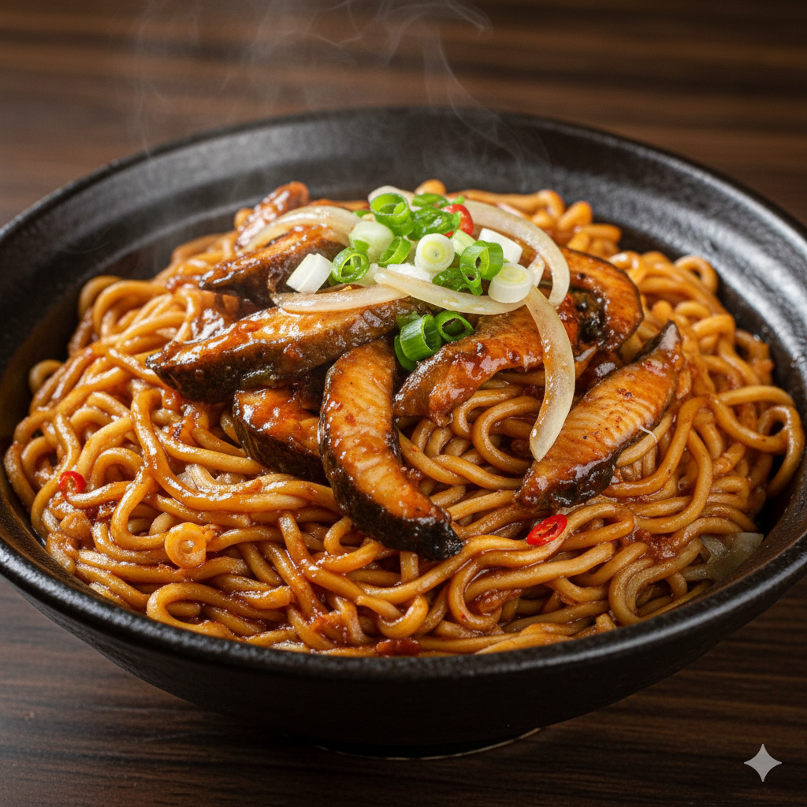

學號姓名：91034107 陳振瑋
🍜 經典南台灣美食：鱔魚意麵

鱔魚意麵
是台南最具代表性的特色小吃之一。這道料理講求「鑊氣」，必須透過大火快炒讓鱔魚保持清脆，再配上酸甜適中的濃郁芡汁，與油炸過後容易吸附湯汁的意麵完美結合。
🛒 準備食材
主料：
新鮮鱔魚、台南意麵。
配料：
洋蔥絲、蔥段、蒜末、辣椒（選用）。
調味料：
烏醋、砂糖、醬油、米酒、太白粉水（勾芡用）、白胡椒粉。
👨🍳 烹飪步驟
處理意麵：
將意麵放入滾水中稍微燙軟後撈起備用（注意不要煮太爛，保持彈性）。
爆香：
熱鍋加入適量油，放入蒜末、洋蔥絲及蔥段煸炒出香味。
快炒鱔魚：
轉
大火
，放入鱔魚片快速翻炒。鱔魚不宜久炒，約 5-6 分熟時即可加入調味料。
調味勾芡：
加入醬油、砂糖、烏醋及少許水煮滾。倒入太白粉水快速攪拌，做出濃郁的酸甜勾芡汁。
組合：
將備好的意麵放入鍋中，讓麵條均勻吸附醬汁與鱔魚香味，最後撒上白胡椒粉即可起鍋。